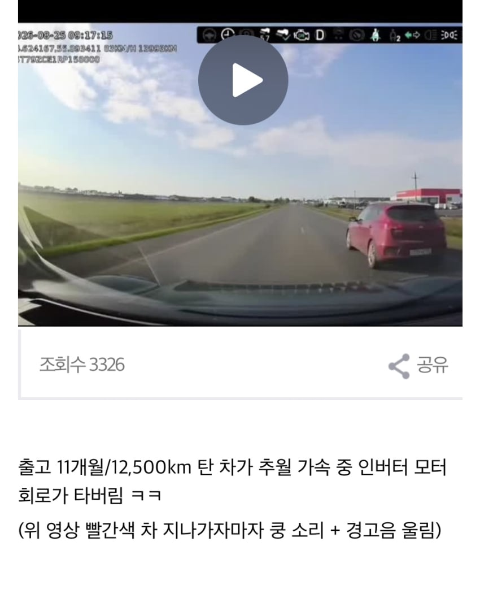
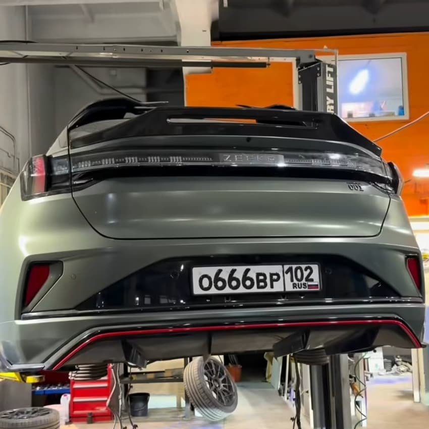
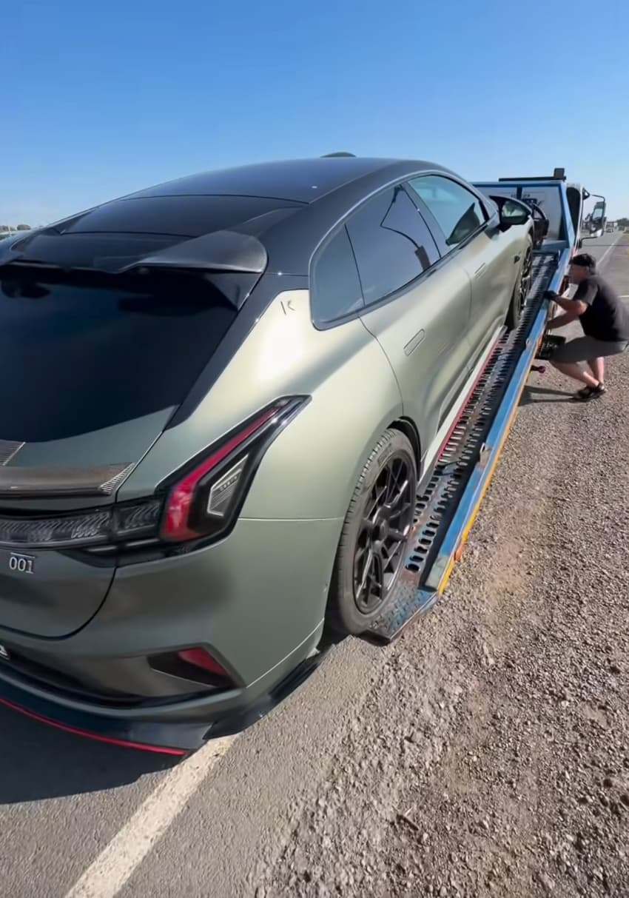
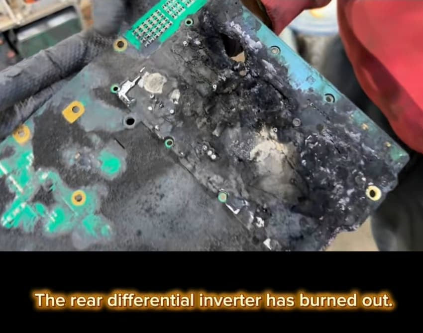
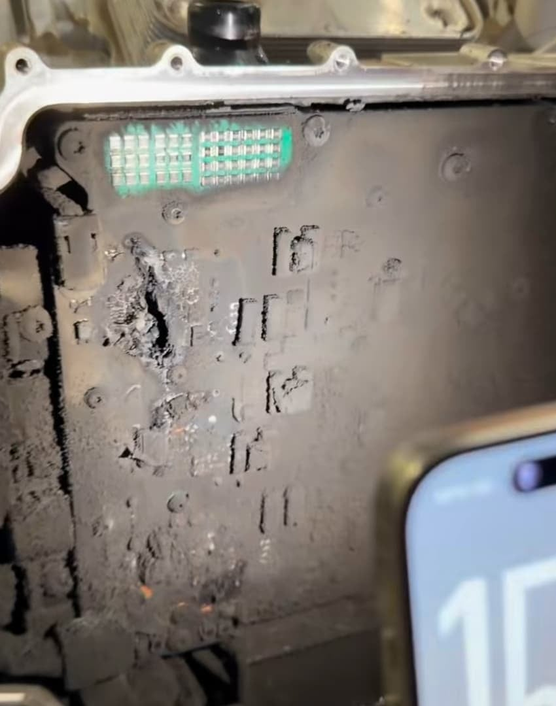
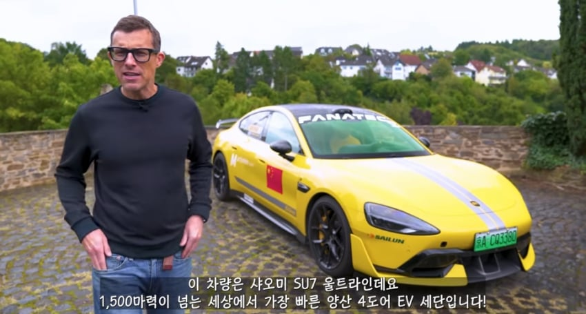
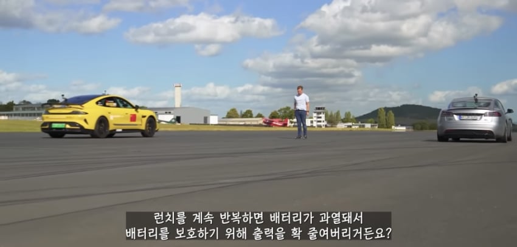
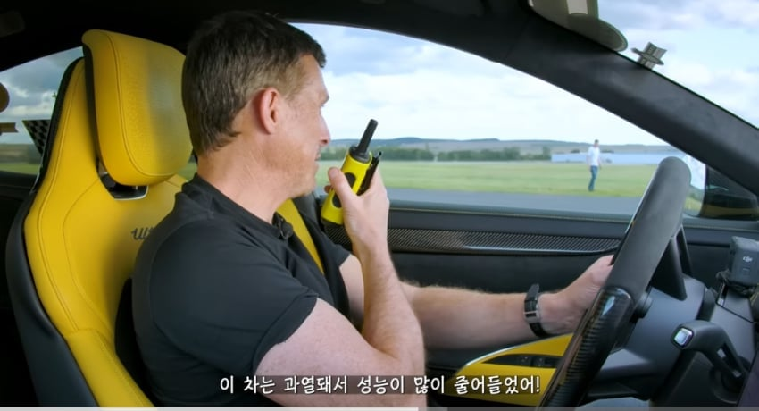
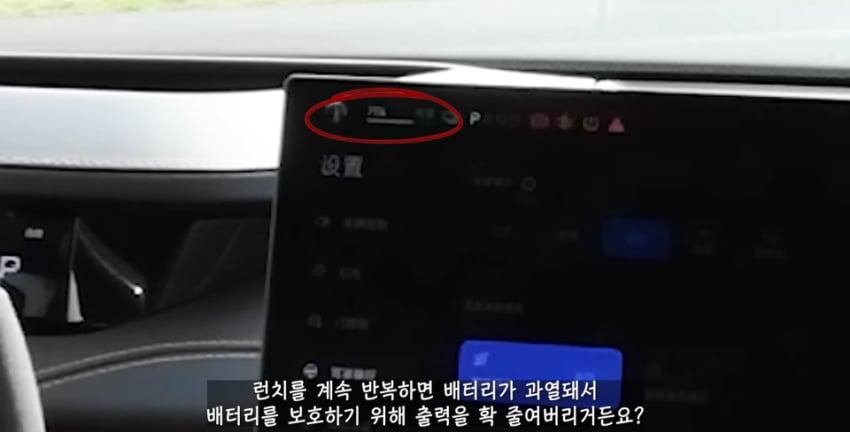
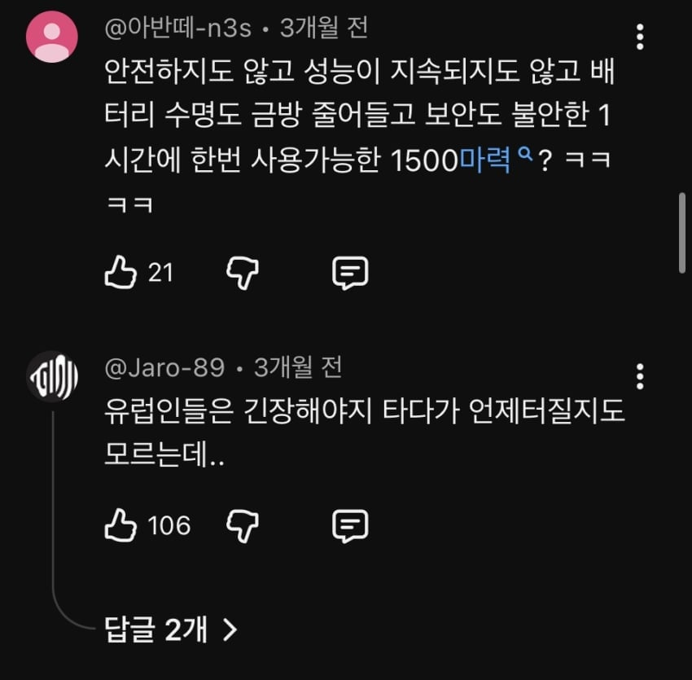
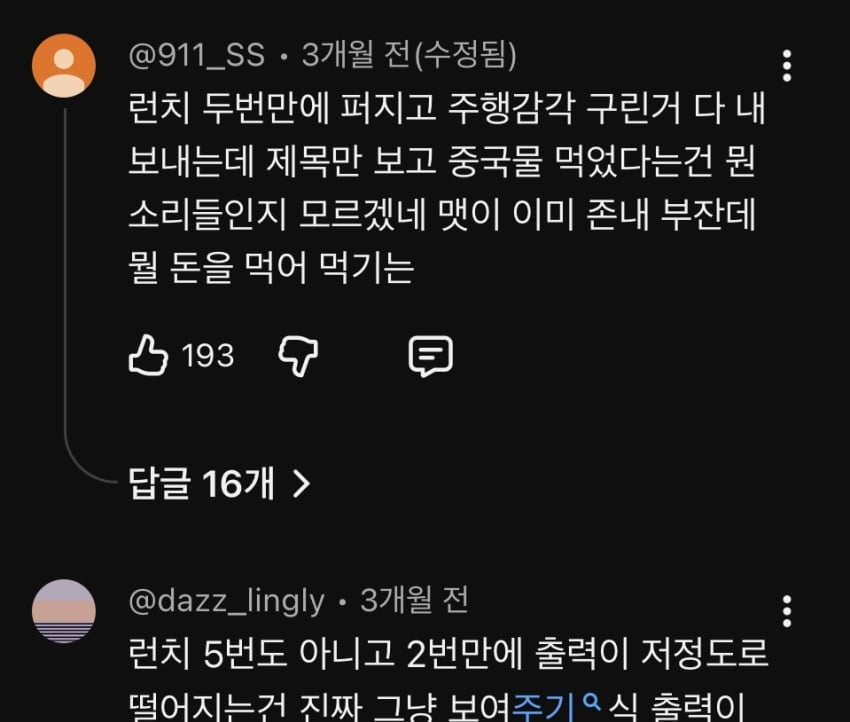
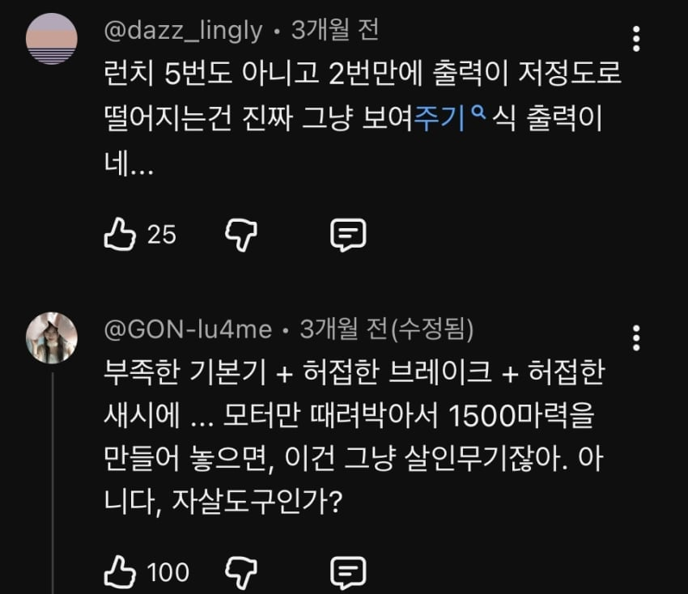
고성능 모델 보강했다고 ㅈㄴ 빨았는데도 저모양인거보면 흉기차 내구도 생각하면 안됨 잔존가치가 없는수준일듯












고성능 모델 보강했다고 ㅈㄴ 빨았는데도 저모양인거보면 흉기차 내구도 생각하면 안됨 잔존가치가 없는수준일듯
방사능 피폭당한 인간 같은 건가
바보같이 재생버튼 누르고 있던 개붕이들은 개추~
본토 ㅉㄱ 유럽 ㅉㄱ들이 많이 타서 안정성 입증되면 그때 사야지
지금 사는건 개에바~
ㄹㅇ 심각하네
byd 택시 많이 생겼다. 조심해라 ㅋㅋㅋㅋㅋㅋ 기사님들도 과속 안 하더라
그걸로 잡히면 죄송하지만 취소 눌러야겠네... 콜 잡힐때마다 차종 확인 단단히 해야겠네 ㅠ
1500마력??
진짜 중국차 찬양한 국내 유튜버들은 돈 받고 리뷰했나보네 계속 극찬하길래 중국차가 현기 위협하는구나 했는데
중국제품은 가성비로 사는거 아니었냐? 기본적으로 몇천만원하는 자동차인데다가 압도적으로 싸지도 않은걸 다른나라도 아니고 한국에서 왜 덥썩 사는건지 ㄹㅇ 이해가 안감
??? : 중국의 기술력이 어쩌구~ 우리도 경각심을 가져야 저쩌구~
저런걸 왜사냐 특히 자동차를 중국걸
근데 왜
지커랑 샤오미의 결함을 예로 들면서
BYD 사지 말라함?
그냥 '중국차'라는 카테고리로 엮어서
중국차 사지 마라 하면 모를까
지커 샤오미랑 BYD는 국적이 같은 경쟁사일뿐이지
뭔 관련 있냐?
지금 들어와서 설레발 치는게 byd오너 라서 그런듯
보니까 byd 생각나더라고 중고가 박살났다고 괜히 사가지고 차 구실도 못하는거 엄한사람 피볼까봐 써봤음 자기전에 올렸을땐 추천 다섯개박혀있더니 개드립왔네 ㅋㅋ
이런글 쓰는애들이 노노재팬하고 중국 불매하고 신토불이찾고 그러는거임 ㅋ
멀쩡히 파는차들 있는데 돈몇푼 아끼겠다고 중국차사는게 맞나 싶은거지 궂이 사겠다는사람 설득하고 다니진 않겠지만 그래도 성인이면 상식이란게 있는거니까.. 출근잘하고 굿데이해
너는 중국차가 아니라 가격이 싼 차 사는 사람을 업신여기려는 의도로 글을 쓰고있구나
돈몇푼 아낀다느니 상식이 없다느니 차 구실도 못하느니
사람이 생각이 편협하고 안목이 좁으면 이런 인간이 되는구나
컨셉도 밴 사유임
수입차가 살때 싸다고 그게 싼거야? 거기다 중국찬데? 나도 개썩lf타 혼자타면 대충 2천짜리 타고 애생기면 카니발타고 다 거기서거기지 뭘 차값가지고 사람을 업신여겨
굴러도 못가는 차를 사지말라는거야 예민한사람들은 중고도 사지말라하는데 뭔 굴러갈지 말지도 의심되는 중국차를 사는게 말이됨?
당장 방전나서 하루 못써도 불편한게 찬데 일상에 지장가지 않게 쓰는게 중요하다 상식아냐?
가뜩이나 전기차타는사람들은 통근키로수도 멀텐데 차 뻗으면 버스지하철 다섯번 갈아타던가 택시타고 출근할겨?
아니긴 뭘 아니야
니가 쓴 말을 봐봐
니가 현기차를 타든 뭘 타든 니가 타는 차는 들먹거리지 말고
돈몇푼 아낀다느니 상식이 없다느니 차 구실도 못하느니 굴러도 못간다느니
니 생각에 좀 급 이 떨어진다고 여기는 차 타는 사람을 상식이 없다고 얘기하면 되겠니?
중국뿐이 아니고 인도, 베트남도 자국차를 만들고 거기사람들 다 타고다니는데 다 상식이 없는거니?
그리고 자주 고장나서 못타는차 타면 상식이 없다는건데,
그럼 레인지로버 사는 사람들도 상식이 없고 차 구실도 못하는걸 산거?
정기검사중에 엔진 터지는 차 사는게 상식이 없는 사람이냐?
아니잖아?
겪어보지도 않고 주워들은거로 혐오글 조롱글 찍쓰는게 비정상이지
애 울겠다
너는 모카 구독할것 같음 ㅋ
나도 돈 몇푼 아끼겠다고 현기차 사는게 맞나 싶음... 성인이면 상식이란게 있는거니까..
니애비 = 니 애비차 비와디 ㅜㅜ
진짜 신기한게 분명 중국에서 중국사람들도 타는 차일거고
수입이라고 고의적으로 사양을 낮추지는 않았을텐데, 왜 다른 차들한테서는 생기지 않는 불량들이 이렇게나 많이 터지는지 이해불가
아무튼 좋고 싸다잖냐 ㅋㅋㅋㅋ 많이들 타라 그래.
이런거 올리면 BYD오너스가 이놈한다
나중에 감가 생각하면 싼게 결코 싸지 않을텐데
잔존가치 생각하면 안되는건 ㅆㅇㅈ
ㄹㅇ 또 보면 중고로 처분 안하면 잔존가치 신경안써도 된다 소리도 하던데
차를 폐차까지 탄다는게 상상이상으로 엄청나게 긴데 썩차타고있는 내입장에서 봤을때 부품수급 안되면 그게 폐차라 국산 주류차종은 신품재고가 쌓여있고 비주류여도 재생품이 계속 돌아서 상관없는데 byd? 하..
좋은 사람들 열심히살고 자기일엔 똑똑한 사람도 사기 당할수있고 이게 당하고 말고는 한끝차이라 참 안타깝고 안그랬음 좋겠음
내가 사기감별이 되는사람이라는건 아니지만 byd는 진짜 아닌거같우
ㅉㄱ차 싸다고하는사람들은 차만 사면 이후로 돈 안든다고 생각하는거야? 차관련 글들보면 차만사면 다 끝나는줄 아는애들 많은거같아
ㄹㅇ 그냥 오일냉매 줄줄새도 다떼내고 골프카트마냥 공랭식으로 타고다닐건가봄
중국애들차는 배터리대비해서 출력이 너무 쎄다보니 못믿겠음
첨엔 비야디 사는사람 이해안가다가
지금은 그사람들한텐 그만한 가치가 있구나라고 생각함
좋은쪽으로나 나쁜쪽으로나 ..
출근길에 비와디 한대 보이는데 언제 터질까 기대하는중 ㅋㅋ
중국한태 그렇게 당하고도 또 사는거보면 진짜 능지문제긴해
유럽여행가면 렌탈 많이하는데 렌탈업체에 쫙깔림 도대체 얼마에 차량 뿌려댄건지 감안올정도로...
이젠 뭐가 사실인지 잘 모르겠음. byd가 돈을뿌려서 여론을 형성하는건지 아니면 현기가 여론을 형성하는건지. 그렇게 쓰면 안되는거면 한두푼도 아니고 길거리에 이렇게 많이 보이면 안될것 같은데 당장 우리회사 우리동네만해도 자주보이니까.
비와디수호단 통한의 비추실명제 누르고 ㅌㅌ할듯